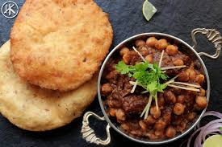

Recipe of Chole Bhature

Description
Chole Bhature is a famous Punjabi dish consisting of spicy chickpea curry (Chole) served with deep-fried bread (Bhature). It is a hearty and filling meal, often enjoyed for breakfast or lunch.
This recipe guides you through making authentic Chole with perfectly puffed Bhature.
Ingredients
- 2 cups chickpeas (chole), soaked overnight
- 2 large onions, finely chopped
- 2 tomatoes, pureed
- 1 tsp ginger-garlic paste
- 2 green chilies
- 1 tsp cumin seeds
- 1 tsp coriander powder
- 1/2 tsp turmeric powder
- 1 tsp garam masala
- 1 tsp amchur (dry mango powder)
- Salt to taste
- 3 tbsp oil
- Bhature (store-bought or homemade)
Steps
- Pressure cook soaked chickpeas with salt until soft.
- Heat oil in a pan. Add cumin seeds and let them splutter.
- Add chopped onions and sauté until golden brown.
- Add ginger-garlic paste and cook for 1 minute.
- Add tomato puree, turmeric, coriander powder, and cook until oil separates.
- Add boiled chickpeas and mix well.
- Add garam masala and amchur powder. Simmer for 10 minutes.
- Serve hot with freshly fried Bhature.